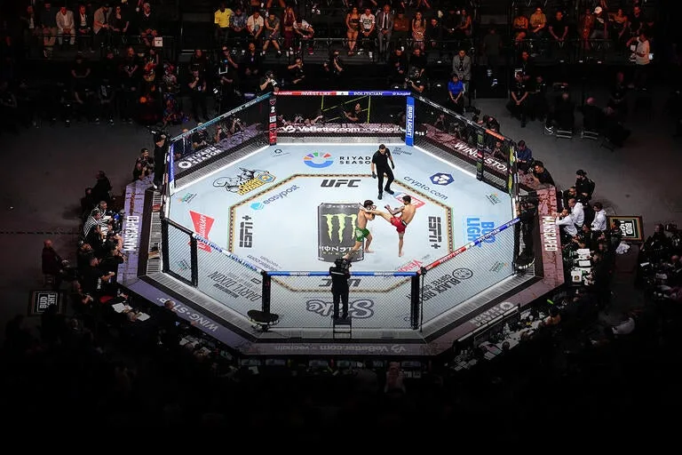
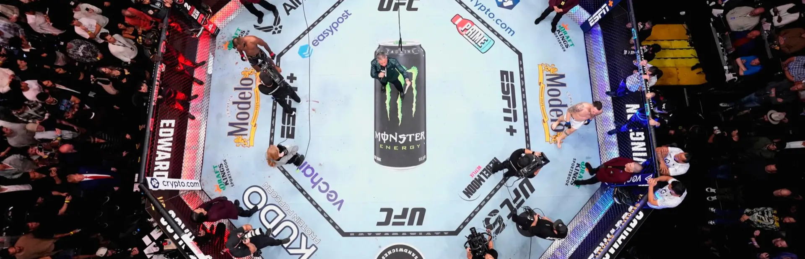

This is one of the projects I tell people about when they ask what the most fun thing I have ever worked on was. In 2017, while I was a Senior Data Scientist at AGT International in Darmstadt, our team built a real-time fighter-tracking and analytics system for the UFC. The product was launched as part of HEED, AGT's IoT-driven sports platform, and was presented in a live demonstration by our CEO Mati Kochavi during AWS CTO Werner Vogels' keynote at AWS re:Invent 2017 in Las Vegas — see the recording on YouTube.
The brief was easy to state, but the implementation was very complex: produce real-time, broadcast-quality statistics for an MMA fight, generated from the cage itself, with no human operator pressing buttons. The system had to work everywhere the UFC went, install in hours (usually the day before the event), survive the production environment of a live televised event, and feed numbers into the official mobile app while the fight was still happening.

What We Measured
The output of the system was a continuous stream of statistics for each of the two fighters:
- Position and speed — every fighter's location inside the octagon, sampled many times per second.
- Octagon control — which fighter was occupying the centre vs. being pushed against the cage, computed from the relative positions over time.
- Total movement — distance covered by each fighter through a round and across the fight.
- Posture state — standing vs. on the ground, with transitions timestamped so the broadcast could show "X seconds of ground game".
- Strike counts — kicks and punches, separated by type (jab, hook, uppercut, …) and by attempted vs. landed.
All of this was published to the cloud, aggregated, and pushed to the consumer-facing UFC app and to broadcast graphics in near real time.
Hardware in the Truss
Coverage of a UFC octagon — eight sides, fast lateral motion, frequent occlusions when fighters clinched — was the first hard problem. We solved it with two Stereolabs ZED RGB-D cameras mounted on the truss above the cage, angled to give overlapping fields of view that covered the entire fighting surface. The depth channel was crucial: knowing the distance of each fighter from the camera let us resolve the ambiguities that single RGB streams suffered from, especially during ground exchanges.
Both cameras were cabled to a GPU-equipped PC, also mounted on the truss, which performed all the perception work locally. Doing inference at the venue (rather than streaming raw footage to a remote machine) was a deliberate choice — it eliminated the network as a bottleneck, kept latency in the sub-second range, and meant the system kept working even when venue connectivity wobbled. The PC then streamed only the resulting statistics down to the cloud over a much narrower data path.
Sensor Fusion: Vision + Accelerometers
Pure vision could detect that a punch had been thrown, but not whether it had connected — and certainly not the punch type with the precision the UFC wanted. The fix was multi-modal: a parallel sensor team had instrumented the fighters' gloves with accelerometers, providing a second, completely independent signal for every strike.
We fused the two streams in real time:
- The vision pipeline detected the launch of a strike, identified which fighter threw it, and gave a coarse classification of its trajectory.
- The accelerometer pipeline detected the impact event, the magnitude of the deceleration, and the kinematic signature characteristic of different punch types (uppercut, hook, straight).
- A fusion layer matched accelerometer events to vision events by timestamp and fighter ID, and used the combination to decide hit vs. miss and to commit a final classification of the punch type.

Cloud and Delivery
Once produced at the edge, the statistics were ingested through AWS services (Kinesis for ingestion, downstream services for processing, persistence, and fan-out — see AGT's separate AWS re:Invent 2017 talk on the Kinesis side of the architecture). From there they were relayed to the UFC app and to broadcast partners.
This was a project where I was involved end to end:
- Algorithm design — I worked on the perception side: detection, tracking, posture classification, and the matching logic that fused vision with the accelerometer stream.
- Network and edge architecture — choices about where computation happened (truss vs. cloud), how data moved between components, and how the system behaved under network degradation.
- Product ownership — translating between what the UFC wanted as a product (clean, interpretable, defensible numbers) and what we could measure as engineers.
- Customer-facing point of contact — direct contact with the UFC and with the sensor team that built the glove instrumentation, coordinating their hardware and our software so the two halves of the system actually shipped as one product.
- Live deployment — I travelled to multiple live events around the world to install, calibrate, and operate the system on fight nights.